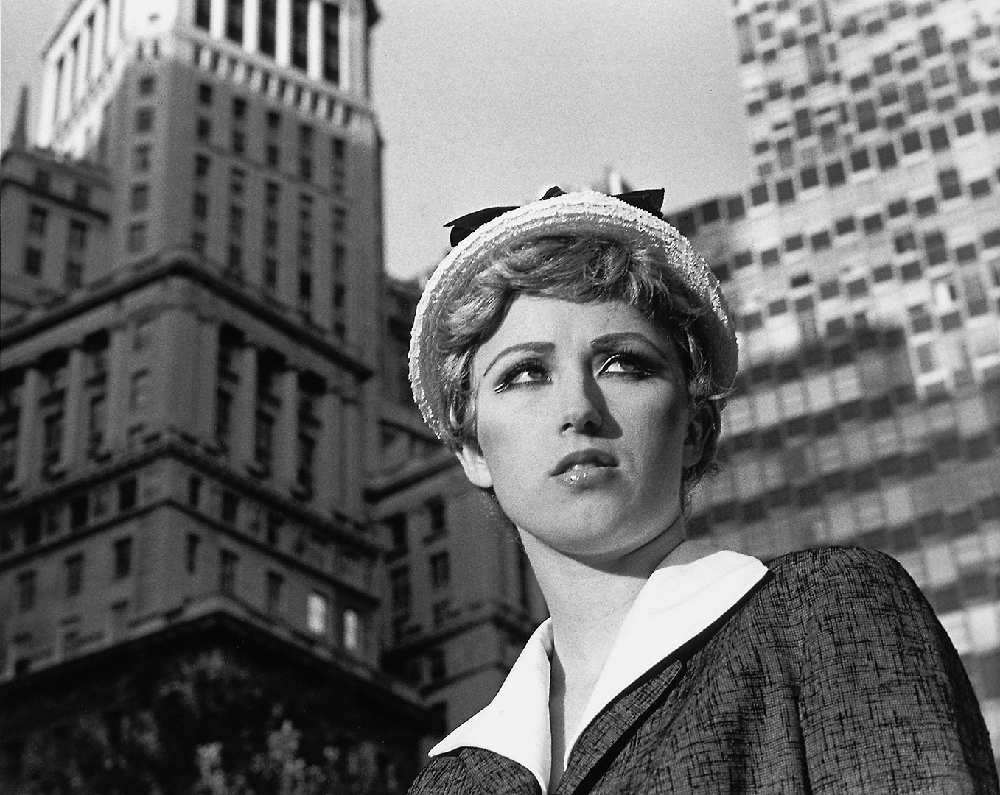

Cindy Sherman (January 19,1954) is an American conceptual artist. She is widely recognized as one of the most influential artists in the modern age of photography. She is a photographer, model, hairdresser, stylist and makeup artist.

A large variety of photographic techniques and media are used in the process of capturing images for photography. These include the camera; stereoscopy; dualphotography;full-spectrum, ultraviolet and infrared media; light field photography; and other imaging techniques.
The camera is the image-forming device, and a photographic plate,photographic film or a silicon electronic image sensor is the capture medium.Photographers control the camera and lens to "expose" the light recording material to the required amount of light to form a "latent image" (on plate or film) or RAW file (in digital cameras) which, after appropriate processing, is converted to a usable image. Digital cameras use an electronic image sensor based on light-sensitive electronics such as charge-coupled device (CCD) or complementary metal-oxide-semiconductor (CMOS) technology. The resulting digital image is stored electronically, but can be reproduced on a paper.
Photographs, both monochrome an color, can be captured and displayed through two side-by-side images that emulate human stereoscopic vision. Stereoscopic photography was the first that captured figures in motion.
Dualphotography consists of photographing a scene from both sides of a photographic device at once (e.g. camera for back-to-back dualphotography, or two networked cameras for portal-plane dualphotography).
Ultraviolet and infrared films have been available for many decades and employed in a variety of photographic avenues since the 1960s. New technological trends in digital photography have opened a new direction in full spectrum photography, where careful filtering choices across the ultraviolet, visible and infrared lead to new artistic visions.
Digital methods of image capture and display processing have enabled the new technology of "light field photography" (also known as synthetic aperture photography). This process allows focusing at various depths of field to be selected after the photograph has been captured.[40] As explained by Michael Faraday in 1846, the "light field" is understood as 5-dimensional, with each point in 3-D space having attributes of two more angles that define the direction of each ray passing through that point.